Акцент фиолетовый, жёлтый только для золота
Голосовое начальника 16.11, карточка #1. Прошёл 6 страниц демо: матч, турнир, новости, турниры, расписание, главная. На скринах «было» — как сейчас, «предлагаю» — та же страница с подменой цвета. На страницах пока ничего не менял.
Уже решено дирижёр 16.11: показываю, как это будет выглядеть
Tier 1 — залит фиолетовым, Tier 2 — фиолетовый погуще, Tier 3 — едва фиолетовый, Tier 4 — серый, как сейчас. Порядок тиров виден по яркости. На главной Tier 1 сейчас белый.
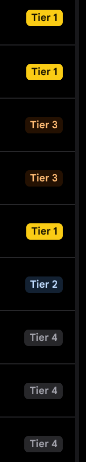
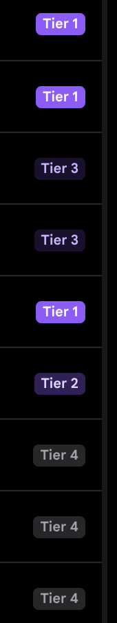
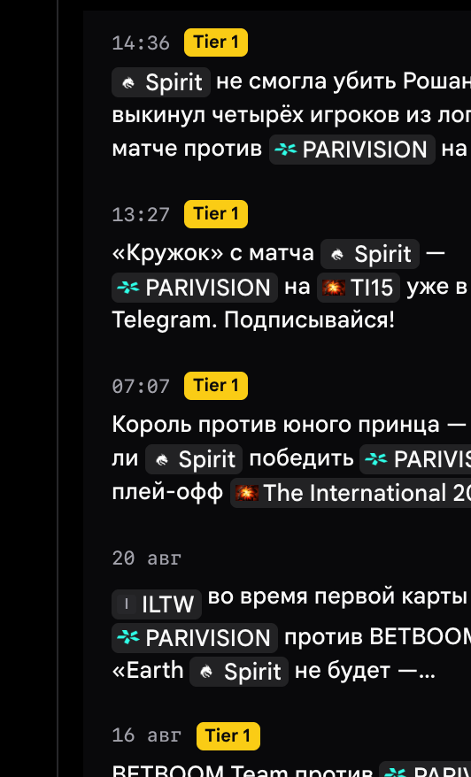
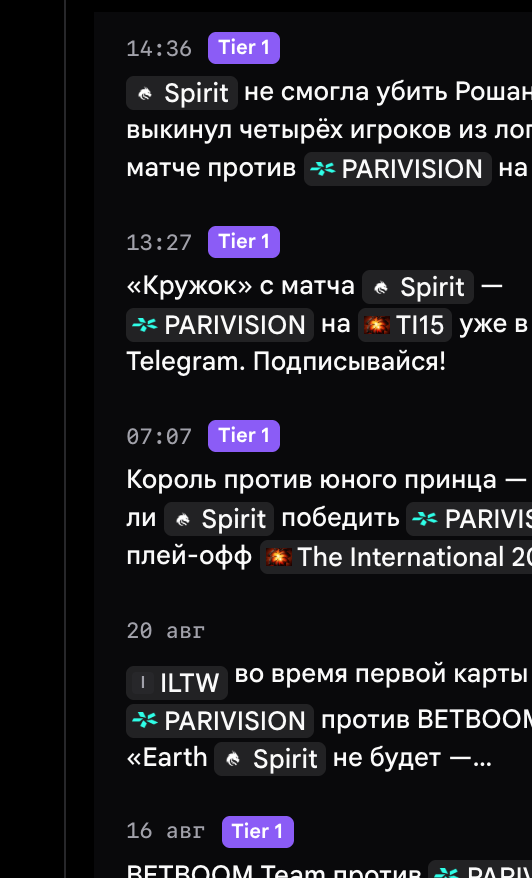

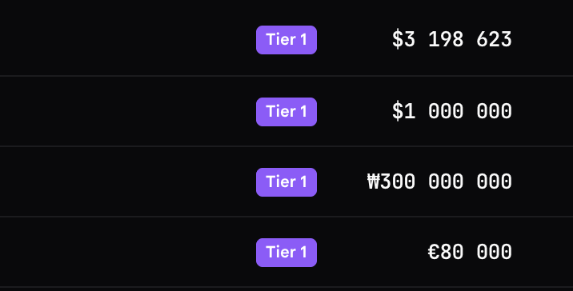
Рамка, текст и замок — фиолетовые. Монета «1 240» рядом — смотри #11.
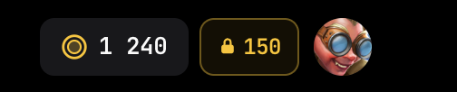
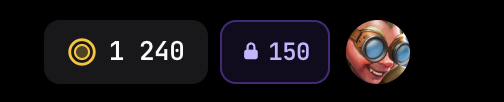
Этот цвет у прогнозов везде: «Новый», бегущая рамка новой карточки, точка ожидания, итог в подвале. Меняю его в одном месте, на всех.
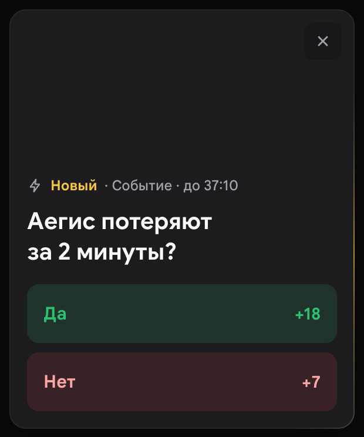
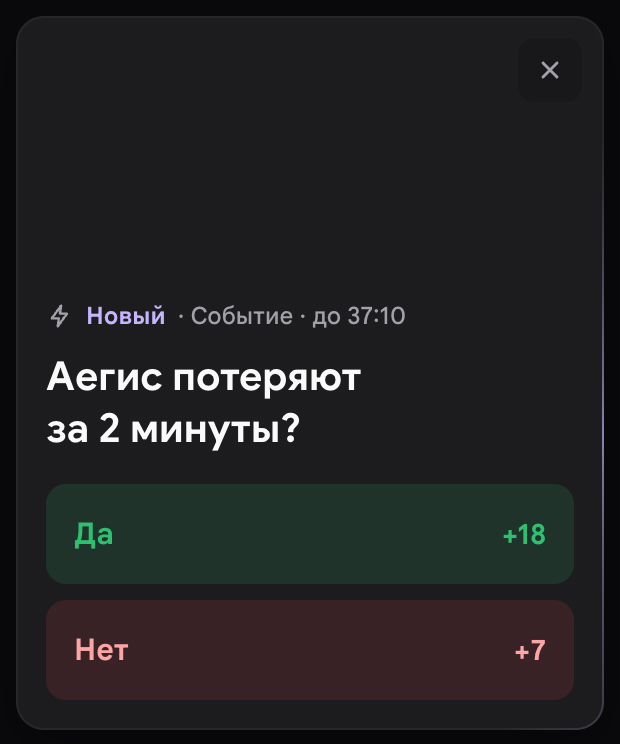

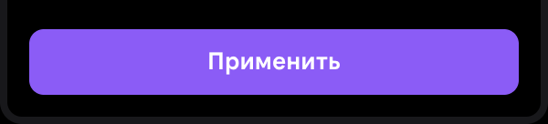
Предлагаю белое выбранное → «чёрный поднятый», белый акцент → фиолетовый
Это неакцентный выбор, поэтому как «Все» в фильтре: серый фон, белый текст. На скрине — переключатель вида и сортировка «Посев». То же у кнопок состав / запасные в карточке команды.
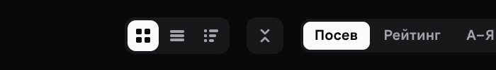
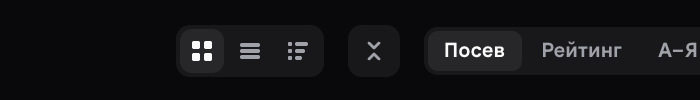
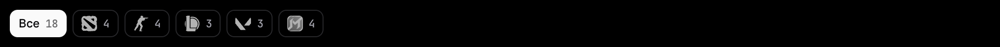

Белый кружок — единственный акцент в строке. Предлагаю фиолетовый.

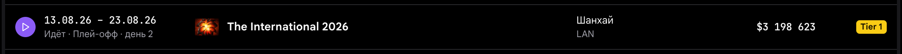
Это кнопка-призыв, значит акцент.
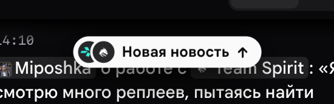
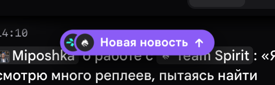
Кольцо отмечает новое, как в Instagram. Предлагаю фиолетовый.

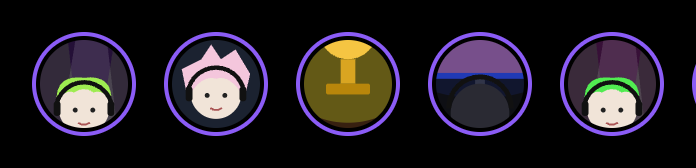
Вопрос жёлтое, но не уверен, что это не золото
Жёлтая точка под графиком отмечает убийство Рошана. Это событие игры, к акценту не относится. Сделать фиолетовой?
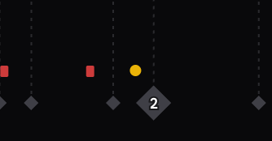
Баллы — это деньги портала, поэтому жёлтый как у золота. Если золото — только игровое, то монету тоже в фиолетовый.
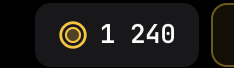
Не видно на демо сразу жёлтое, поменяю вместе с пунктами выше
- Турнир → участники, режим редактора: звезда «Редакция» и счётчик заметок жёлтые → фиолетовые. Кнопка «Добавить» белая → фиолетовая.
- Турнир → подпись команды (обрезана на 1440): результат «2-1-1» жёлтый → серый, как остальная подпись.
- Матч → MVP: монета цены жёлтая — это цена в баллах, решится вместе с #11.
Не трогаю
- Золото на матче: «72.9k / 81.4k», монеты, нетворс в «Статистике», полосы золота в «Этой серии» (решено).
- Вкладки Map 1 / 2 / 3 (решено). Сегмент «Все» в фильтре турниров — образец неакцентного.
- Логотип в шапке — белый, это бренд.